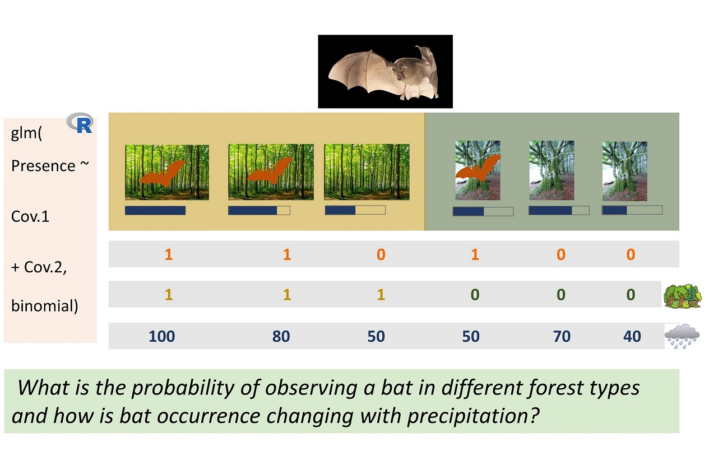
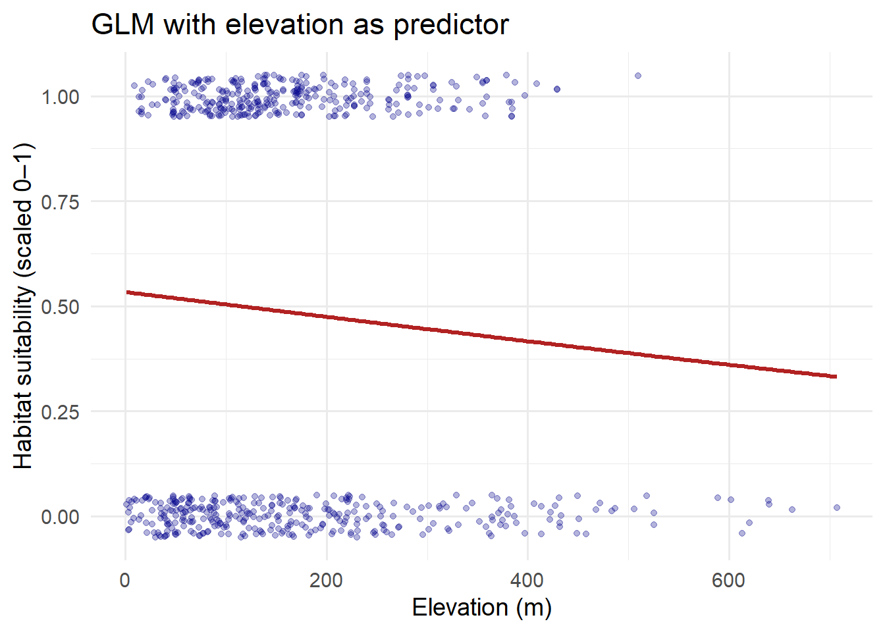
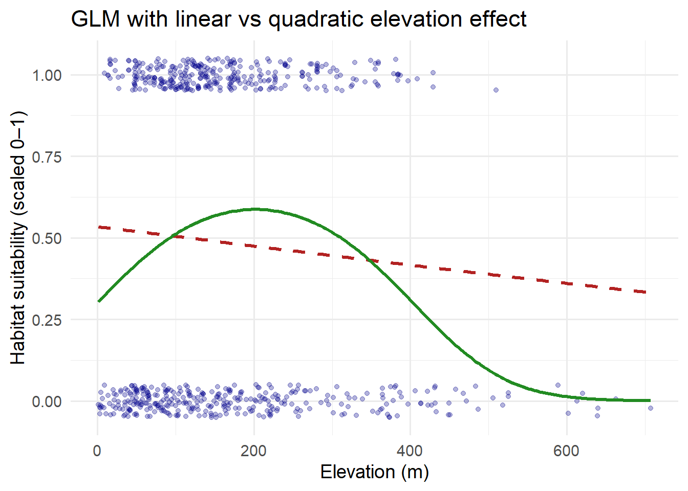
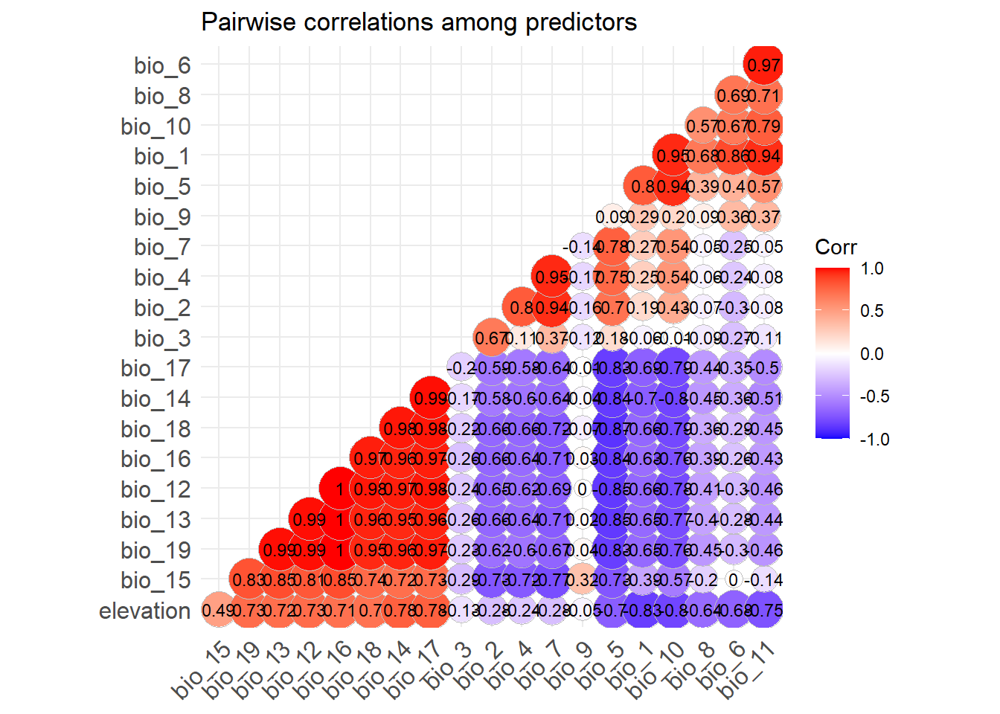
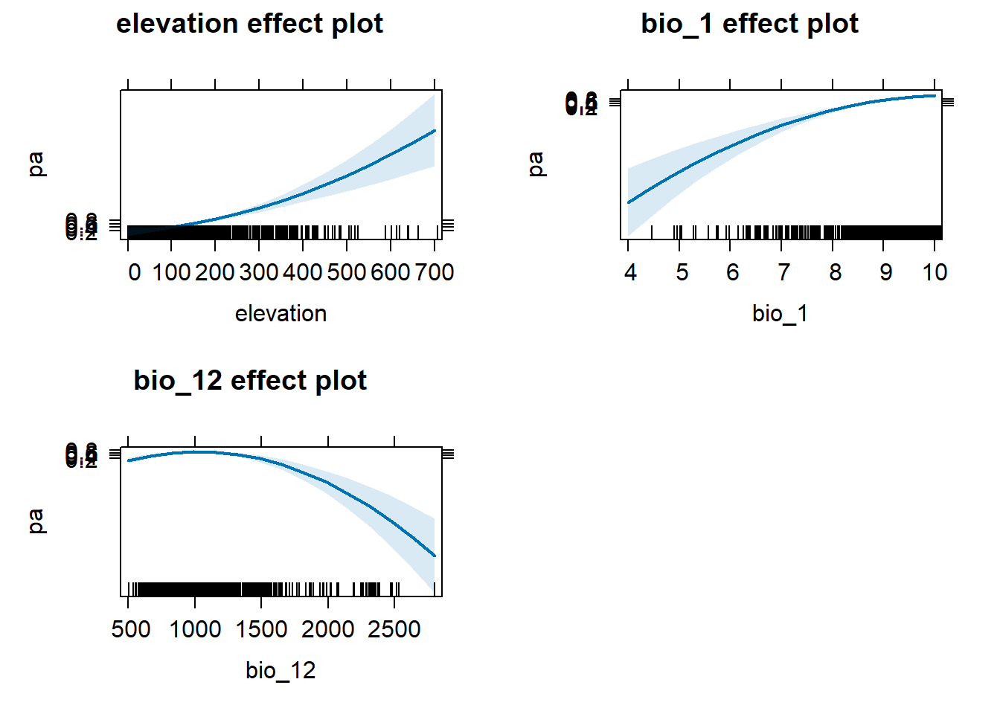

Simple model fitting
We now arrive at the core of species distribution modelling (SDM): fitting the model. Having prepared occurrence, background, and environmental data, this section introduces a foundational yet flexible approach — the generalised linear model (GLM) to estimate habitat suitability for Rhinolophus hipposideros across the UK.
SDMs quantify relationships between observed species distributions and environmental predictors, then project these relationships in space or time to identify potentially suitable areas under current or future conditions. While numerous algorithms exist, including MaxEnt, Random Forest, Boosted Regression Trees, and ensemble methods — the choice of model should reflect the modelling objective: inference, spatial prediction, or forecasting (Zurell et al. 2020).
GLMs, despite being statistically “simpler” than many machine learning alternatives, remain widely used because they are interpretable, computationally efficient, and well-suited to presence–background data. However, building meaningful SDMs still requires rigorous conceptualisation:
Are the data spatially biased or autocorrelated?
Are predictor variables collinear or ecologically redundant?
Is the model too simple or overly complex?
Are we modelling for understanding, mapping, or future projection?
In this session, we will fit a logistic regression model using key bioclimatic and topographic predictors. You will explore how to interpret model coefficients, predict across environmental space, and visualise suitability maps. This exercise lays the foundation for more advanced techniques — including model validation, spatial transfer, and ensembling, which we will explore in subsequent sessions.
For further background, see foundational SDM texts such as Elith & Leathwick (2009), and Franklin (2010), and methodological overviews and tutorials (e.g., Zurell et al. 2020, Araújo et al. 2019).
NoteModel fitting is an iterative process
While SDMs are often presented as a sequence of discrete steps — from data preparation to modelling and projection — the process is inherently iterative.
Fitting a model is rarely the endpoint. Often, model results reveal issues that require revisiting earlier decisions, such as:
Re-examining environmental predictors (e.g., removing collinear or ecologically irrelevant variables)
Adjusting background sampling to better reflect sampling bias
Filtering or cleaning occurrence data more stringently
Refining the study extent or resolution to match ecological realism
Each modelling decision can influence not only model performance, but also ecological interpretation and predictive transferability. As such, iteration is not a failure — it’s good modelling practice. Treat each round of model fitting as an opportunity to improve clarity, parsimony, and ecological relevance.
üìå Think of model fitting not as a straight line, but as a feedback loop between conceptualisation, data, and interpretation.
1. Fit a basic binomial GLM (logistic regression)
NoteGLM refresher: Logistic regression basics
Before applying generalised linear models (GLMs) in species distribution modelling, let’s briefly revisit the fundamentals of logistic regression — the most common approach for modelling binary outcomes, such as species presence or absence.
Presence–absence data are common in ecological and environmental research, but also in many other domains, such as infection status in epidemiology or success/failure in behavioural studies. Logistic regression models the probability of an event (e.g., species presence) as a function of one or more predictors, using a logit link function to map probabilities to the real line.
To illustrate, we begin with a simple example — random presence–absence data simulated as Bernoulli trials:
# Draw random binary outcomes (e.g., 10% chance of presence)
y <- rbinom(50, 1, 0.1)
# Observed mean presence probability
mu_y <- mean(y)
mu_y[1] 0.08This observed mean can be estimated with a logistic regression model. A model with no predictors is an intercept-only model:
# Intercept-only GLM
mod <- glm(y ~ 1, family = "binomial")
# Inspect design matrix (only intercept)
model.matrix(mod) (Intercept)
1 1
2 1
3 1
4 1
5 1
6 1
7 1
8 1
9 1
10 1
11 1
12 1
13 1
14 1
15 1
16 1
17 1
18 1
19 1
20 1
21 1
22 1
23 1
24 1
25 1
26 1
27 1
28 1
29 1
30 1
31 1
32 1
33 1
34 1
35 1
36 1
37 1
38 1
39 1
40 1
41 1
42 1
43 1
44 1
45 1
46 1
47 1
48 1
49 1
50 1
attr(,"assign")
[1] 0# Model summary
summary(mod)
Call:
glm(formula = y ~ 1, family = "binomial")
Coefficients:
Estimate Std. Error z value Pr(>|z|)
(Intercept) -2.4423 0.5213 -4.685 2.8e-06 ***
---
Signif. codes: 0 '***' 0.001 '**' 0.01 '*' 0.05 '.' 0.1 ' ' 1
(Dispersion parameter for binomial family taken to be 1)
Null deviance: 27.877 on 49 degrees of freedom
Residual deviance: 27.877 on 49 degrees of freedom
AIC: 29.877
Number of Fisher Scoring iterations: 5Because logistic regression uses the logit link, model coefficients are on the log-odds scale. To convert to probabilities, we apply the inverse-logit (or logistic) function:
# Define inverse logit function
invlogit <- function(x) { exp(x) / (1 + exp(x)) }
# Estimate mean probability from model
mu_mod <- invlogit(coef(mod))
mu_mod(Intercept)
0.08 This simple model demonstrates how GLMs estimate the expected occurrence probability of a binary outcome. Understanding this structure is essential for interpreting more complex SDMs where environmental covariates explain spatial patterns in species occurrence.
We now move on to fitting such models using actual species and environmental data.
1.1 Fitting the first GLM: a single environmental predictor
We now fit our first statistical species distribution model: a generalised linear model (GLM) with a logit link function and a binomial error distribution.
GLMs extend ordinary least squares regression by allowing non-Gaussian responses and link functions that map probabilities to the real line. In our case:
- Response variable: species occurrence (
pa, 1 = presence, 0 = pseudo-absence)
- Predictor: one environmental covariate (here,
elevation)
- Model family:
binomialwithlogitlink (logistic regression, applicable to a binary response variable)
This simple model quantifies how occurrence probability of Rhinolophus hipposideros varies along an environmental gradient.
# Make sure sdm_df_clean$pa contains 0/1 numeric values, not factors
sdm_df_clean$pa <- as.numeric(sdm_df_clean$pa == 1)
# Fit logistic regression with elevation as the only predictor
glm_elev <- glm(pa ~ elevation,
data = sdm_df_clean,
family = binomial(link = "logit"))
summary(glm_elev)
Call:
glm(formula = pa ~ elevation, family = binomial(link = "logit"),
data = sdm_df_clean)
Coefficients:
Estimate Std. Error z value Pr(>|z|)
(Intercept) 0.1347145 0.1338897 1.006 0.3143
elevation -0.0011801 0.0006495 -1.817 0.0692 .
---
Signif. codes: 0 '***' 0.001 '**' 0.01 '*' 0.05 '.' 0.1 ' ' 1
(Dispersion parameter for binomial family taken to be 1)
Null deviance: 912.90 on 658 degrees of freedom
Residual deviance: 909.55 on 657 degrees of freedom
AIC: 913.55
Number of Fisher Scoring iterations: 4The coefficients from a logistic regression are expressed on the log-odds scale. The intercept can be transformed with the logistic (inverse-logit) function to give the baseline probability of occurrence (at predictor = 0). For slope terms, exponentiation (exp()) gives the odds ratio associated with a one-unit change in the predictor, rather than a direct probability
# Define inverse logit
invlogit <- function(x) exp(x) / (1 + exp(x))
# Convert intercept to probability
invlogit(coef(glm_elev)[1])(Intercept)
0.5336278 # Odds ratio for 1-unit change in elevation
exp(coef(glm_elev)["elevation"])elevation
0.9988206 Visualising the fitted response curve
To make the model more intuitive, we can plot the observed data and overlay the fitted probability curve.
# Generate prediction grid
elev_seq <- data.frame(elevation = seq(min(sdm_df_clean$elevation, na.rm = TRUE),
max(sdm_df_clean$elevation, na.rm = TRUE),
length.out = 200))
# Predict occurrence probability
elev_seq$pred_prob <- predict(glm_elev, newdata = elev_seq, type = "response")
# Plot data + fitted curve
ggplot(sdm_df_clean, aes(x = elevation, y = pa)) +
geom_jitter(height = 0.05, alpha = 0.3, colour = "darkblue") +
geom_line(data = elev_seq, aes(x = elevation, y = pred_prob),
colour = "firebrick", linewidth = 1.2) +
labs(x = "Elevation (m)",
y = "Habitat suitability (scaled 0–1)",
title = "GLM with elevation as predictor") +
theme_minimal(base_size = 14)

NoteInterpreting the elevation-only GLM
A positive slope means that the relative probability of occurrence increases with elevation.
A negative slope means that the relative probability of occurrence decreases with elevation.
The intercept reflects the baseline log-odds, here at elevation = 0. Note that interpreting the intercept assumes a meaningful value at ‘elevation = 0’, which may be outside the observed range. It is often better to center predictors (e.g., subtract mean elevation or use the ‘scale()’ function for scaling all variables) for interpretability.
While simple, this first GLM illustrates the core mechanics of SDMs: linking species occurrence data to environmental gradients. However, because we use presence–pseudoabsence data, the fitted values should not be interpreted as absolute occurrence probabilities — the number of background points (the “zeros”) is arbitrary. Instead, model outputs represent relative suitability across the environmental gradient.
In practice, species–environment relationships are often non-linear, motivating the use of transformations (e.g. quadratic terms) or more flexible algorithms.
1.2 Extending the GLM: quadratic response curve
Species–environment relationships are often non-linear: too cold or too hot, too wet or too dry. A quadratic term allows us to capture such unimodal responses.
We use the poly() function in R, which orthogonalises polynomial terms to reduce collinearity.
# Fit logistic regression with 2nd order polynomial for elevation
glm_elev_poly <- glm(pa ~ poly(elevation, 2),
data = sdm_df_clean,
family = binomial(link = "logit"))
summary(glm_elev_poly)
Call:
glm(formula = pa ~ poly(elevation, 2), family = binomial(link = "logit"),
data = sdm_df_clean)
Coefficients:
Estimate Std. Error z value Pr(>|z|)
(Intercept) -0.11654 0.08254 -1.412 0.15796
poly(elevation, 2)1 -8.33379 2.87411 -2.900 0.00374 **
poly(elevation, 2)2 -16.61301 3.40390 -4.881 1.06e-06 ***
---
Signif. codes: 0 '***' 0.001 '**' 0.01 '*' 0.05 '.' 0.1 ' ' 1
(Dispersion parameter for binomial family taken to be 1)
Null deviance: 912.90 on 658 degrees of freedom
Residual deviance: 876.27 on 656 degrees of freedom
AIC: 882.27
Number of Fisher Scoring iterations: 5Visualising the quadratic response
# Predict occurrence probability for elevation range
elev_seq$pred_prob_poly <- predict(glm_elev_poly,
newdata = elev_seq,
type = "response")
# Plot linear vs quadratic fits
ggplot(sdm_df_clean, aes(x = elevation, y = pa)) +
geom_jitter(height = 0.05, alpha = 0.3, colour = "darkblue") +
geom_line(data = elev_seq, aes(x = elevation, y = pred_prob),
colour = "firebrick", size = 1.1, linetype = "dashed") +
geom_line(data = elev_seq, aes(x = elevation, y = pred_prob_poly),
colour = "forestgreen", linewidth = 1.2) +
labs(x = "Elevation (m)",
y = "Habitat suitability (scaled 0–1)",
title = "GLM with linear vs quadratic elevation effect") +
theme_minimal(base_size = 14)Warning: Using `size` aesthetic for lines was deprecated in ggplot2 3.4.0.
ℹ Please use `linewidth` instead.

NoteWhy quadratic terms matter
Many ecological responses are unimodal (species thrive at intermediate values).
Quadratic GLMs provide a simple way to capture these shapes while retaining interpretability.
Later, we will compare models formally using AIC or cross-validation to assess whether the quadratic term improves predictive performance.
1.3 GLMs with multiple predictors
While single-variable models are useful for learning, most species distributions are shaped by multiple interacting environmental drivers. Extending GLMs to include several predictors allows us to capture more realistic ecological responses.
Key considerations for multivariable GLMs:
Ecological relevance: Select predictors based on natural history knowledge (e.g., bats depend on both climate and topography, not just elevation).
Multicollinearity: strongly correlated predictors inflate variance and obscure interpretation. Tools like variance inflation factor (VIF), pairwise correlation checks, or principal component analysis (PCA) help diagnose and reduce collinearity.
Scaling and centering: standardising continuous predictors (e.g., scale()) improves interpretability and numerical stability.
Interactions: consider biologically plausible interactions (e.g., the effect of temperature may depend on rainfall).
Interpretation: each coefficient reflects the effect of a predictor while holding the others constant.
TipChecking correlation among predictors and variable selection
Before fitting multivariable GLMs, it is crucial to examine correlations among predictors. Highly correlated variables can inflate standard errors, obscure interpretation, and lead to unstable models.
Step 1: Compute correlations
library(corrr)
library(ggplot2)
library(ggcorrplot)
# Select environmental predictors
env_vars <- sdm_df_clean %>%
dplyr::select(starts_with("bio_"), elevation)
# Compute correlation matrix
cor_matrix <- correlate(env_vars)
# Stretch to long format
cor_long <- stretch(cor_matrix) # columns: x, y, r
# Visualise correlation matrix directly
ggcorrplot::ggcorrplot(cor(env_vars, use = "pairwise.complete.obs"),
hc.order = TRUE,
type = "lower",
lab = TRUE,
lab_size = 3,
method = "circle",
colors = c("blue", "white", "red"),
title = "Pairwise correlations among predictors")
Step 2: Identify highly correlated pairs
# Threshold for "high correlation"
high_corr_thresh <- 0.7
# Find pairs above threshold
high_corr_pairs <- cor(env_vars, use = "pairwise.complete.obs") %>%
as.data.frame() %>%
rownames_to_column("var1") %>%
tidyr::pivot_longer(-var1, names_to = "var2", values_to = "r") %>%
filter(abs(r) > high_corr_thresh & var1 != var2)
high_corr_pairs# A tibble: 146 × 3
var1 var2 r
<chr> <chr> <dbl>
1 bio_1 bio_5 0.803
2 bio_1 bio_6 0.860
3 bio_1 bio_10 0.951
4 bio_1 bio_11 0.941
5 bio_1 bio_14 -0.701
6 bio_1 elevation -0.831
7 bio_2 bio_4 0.798
8 bio_2 bio_7 0.936
9 bio_2 bio_15 -0.725
10 bio_4 bio_2 0.798
# ℹ 136 more rowsStep 3: Decide which variables to keep
Several strategies exist:
Prior knowledge: Retain ecologically relevant variables.
Univariate model importance: Fit GLMs individually and rank by AIC or explained deviance.
Automated selection: Dormann et al. (2013) suggest removing the variable with lower univariate importance from each highly correlated pair.
# Example: compute AIC for univariate GLMs
univ_aic <- sapply(names(env_vars), function(v) {
mod <- glm(pa ~ ., data = cbind(pa = sdm_df_clean$pa, env_vars[v]), family = binomial)
AIC(mod)
})
tibble(variable = names(univ_aic), AIC = univ_aic) %>%
arrange(AIC)# A tibble: 20 × 2
variable AIC
<chr> <dbl>
1 bio_11 795.
2 bio_9 811.
3 bio_1 815.
4 bio_6 830.
5 bio_10 847.
6 bio_5 876.
7 bio_8 895.
8 bio_18 901.
9 bio_12 903.
10 bio_13 905.
11 bio_19 906.
12 bio_14 906.
13 bio_16 906.
14 bio_17 909.
15 bio_3 912.
16 elevation 914.
17 bio_15 916.
18 bio_7 916.
19 bio_4 917.
20 bio_2 917.Step 4: Reduce predictors for multivariable GLM
After filtering for highly correlated variables and assessing univariate importance, we retain only the most relevant and weakly correlated predictors - here, bio_1 (annual mean temperature), bio_12 (annual precipitation), and elevation. This approach improves model interpretability, reduces the risk of overfitting, and ensures that the number of parameters aligns with recommended sample sizes per parameter (Guisan et al., 2017).
Example: GLM with elevation and climate variables
# Fit logistic regression with multiple predictors
glm_multi_1 <- glm(pa ~ elevation + bio_1 + bio_12,
data = sdm_df_clean,
family = binomial)
# Alternatively, fit logistic regression with multiple predictors as polynomial terms
glm_multi <- glm(pa ~ poly(elevation, 2) + poly(bio_1, 2) + poly(bio_12, 2),
data = sdm_df_clean,
family = binomial)
summary(glm_multi)
Call:
glm(formula = pa ~ poly(elevation, 2) + poly(bio_1, 2) + poly(bio_12,
2), family = binomial, data = sdm_df_clean)
Coefficients:
Estimate Std. Error z value Pr(>|z|)
(Intercept) -1.4916 0.2656 -5.617 1.95e-08 ***
poly(elevation, 2)1 93.3200 12.7078 7.344 2.08e-13 ***
poly(elevation, 2)2 24.7608 8.8285 2.805 0.00504 **
poly(bio_1, 2)1 125.1616 16.2360 7.709 1.27e-14 ***
poly(bio_1, 2)2 -46.5758 10.7501 -4.333 1.47e-05 ***
poly(bio_12, 2)1 -75.8114 15.8212 -4.792 1.65e-06 ***
poly(bio_12, 2)2 -67.5172 11.8905 -5.678 1.36e-08 ***
---
Signif. codes: 0 '***' 0.001 '**' 0.01 '*' 0.05 '.' 0.1 ' ' 1
(Dispersion parameter for binomial family taken to be 1)
Null deviance: 912.90 on 658 degrees of freedom
Residual deviance: 573.82 on 652 degrees of freedom
AIC: 587.82
Number of Fisher Scoring iterations: 7Here we included:
elevation (topographic constraint)
bio_1: annual mean temperature,
bio_12: annual precipitation.
This model allows us to examine how bats respond jointly to climate and topography.
Visualising effects
For models with several predictors, it is often more useful to visualise marginal effects rather than raw coefficients:
# Load package for partial effects
library(effects)
# Plot marginal effect of each predictor
plot(allEffects(glm_multi))
Alternatively, response curves can be generated by varying one predictor while holding others at their mean or median.
Interpretation caveats:
With presence–pseudoabsence data, predicted values remain relative suitability, not absolute probabilities.
Including too many predictors risks overfitting. Use model selection (AIC, cross-validation) or regularisation methods to avoid this.
Always check whether fitted responses make ecological sense, not just statistical sense.
1.4 Model diagnostics
After fitting a GLM, it is essential to evaluate its performance and understand how well it captures species–environment relationships. Key diagnostics include deviance, pseudo-R², and effect plots.
# Perform stepwise variable selection (forward/backward/both based on AIC)
glm_step <- step(glm_multi, direction = "both", trace = FALSE)
# Inspect selected model
summary(glm_step)
Call:
glm(formula = pa ~ poly(elevation, 2) + poly(bio_1, 2) + poly(bio_12,
2), family = binomial, data = sdm_df_clean)
Coefficients:
Estimate Std. Error z value Pr(>|z|)
(Intercept) -1.4916 0.2656 -5.617 1.95e-08 ***
poly(elevation, 2)1 93.3200 12.7078 7.344 2.08e-13 ***
poly(elevation, 2)2 24.7608 8.8285 2.805 0.00504 **
poly(bio_1, 2)1 125.1616 16.2360 7.709 1.27e-14 ***
poly(bio_1, 2)2 -46.5758 10.7501 -4.333 1.47e-05 ***
poly(bio_12, 2)1 -75.8114 15.8212 -4.792 1.65e-06 ***
poly(bio_12, 2)2 -67.5172 11.8905 -5.678 1.36e-08 ***
---
Signif. codes: 0 '***' 0.001 '**' 0.01 '*' 0.05 '.' 0.1 ' ' 1
(Dispersion parameter for binomial family taken to be 1)
Null deviance: 912.90 on 658 degrees of freedom
Residual deviance: 573.82 on 652 degrees of freedom
AIC: 587.82
Number of Fisher Scoring iterations: 7# 3. Compute diagnostics on selected model
cat("Residual deviance:", glm_step$deviance, "\n")Residual deviance: 573.8213 cat("Null deviance:", glm_step$null.deviance, "\n")Null deviance: 912.8987 cat("AIC:", AIC(glm_step), "\n")AIC: 587.8213 # McFadden's pseudo-R²
pseudo_r2 <- 1 - glm_step$deviance / glm_step$null.deviance
cat("McFadden's pseudo-R²:", pseudo_r2, "\n")McFadden's pseudo-R²: 0.3714294
NoteInterpreting relative suitability
When using presence–pseudoabsence or presence–background data, the predicted values from a logistic regression GLM do not represent true occurrence probabilities. Instead, they provide a relative measure of habitat suitability along environmental gradients.
Key points to remember:
- Higher predicted values indicate more suitable conditions relative to other locations in the study area.
- The absolute scale depends on the ratio of presences to pseudo-absences or background points.
- Avoid interpreting predictions as exact probabilities of occurrence in the field.
TipOther SDM approaches: machine learning and advanced methods
While GLMs offer interpretable models, many modern SDM studies use machine learning (ML) algorithms to capture complex, non-linear relationships and interactions among predictors. Common approaches include:
- MaxEnt – Uses presence-only data with background points; widely used for species distribution modelling.
- Random Forests (RF) – Ensemble of decision trees; handles non-linearities and interactions automatically.
- Boosted Regression Trees (BRT / GBM) – Sequential ensemble of weak learners to improve predictive performance.
These methods are particularly useful when ecological responses are complex or highly non-linear. They complement GLMs and will be explored further in the “SDM Ensemble Models” section.
NoteExercises: Building and evaluating species–environment models
Compare linear vs quadratic responses:
Using the same species dataset, fit two GLMs: one with a single linear predictor (e.g., bio_1) and another with a second-order polynomial (poly(bio_1, 2)). Visualise both fits and compare their AIC values and response curves. Which model better captures the ecological response?Fit multivariable GLMs and assess collinearity:
Select 4–5 bioclimatic and topographic predictors. Compute their pairwise correlation matrix, identify highly correlated pairs (e.g., |r| > 0.7), and remove or justify the inclusion of collinear variables. Fit a multivariable GLM and interpret the model coefficients and pseudo-R².Model with and without scaled predictors:
Refit a GLM using ‘scale()’ to standardise all continuous predictors. Compare the resulting coefficients and diagnostic metrics with the unscaled model. Discuss how scaling affects interpretability, model convergence, and numerical stability, especially in models with interaction or quadratic terms.
NoteLiterature
Araújo, M.B., Anderson, R.P., Márcia Barbosa, A., Beale, C.M., Dormann, C.F., Early, R., Garcia, R.A., Guisan, A., Maiorano, L., Naimi, B., O’Hara, R.B., Zimmermann, N.E. & Rahbek, C. (2019). Standards for distribution models in biodiversity assessments. Science Advances, 5(1), eaat4858. doi:10.1126/sciadv.aat4858
Elith, J., & Leathwick, J. R. (2009). Species distribution models: ecological explanation and prediction across space and time. Annual Review of Ecology Evolution and Systematics, 40, 677–697. doi:10.1146/annurev.ecolsys.110308.120159
Franklin, J. (2010). Moving beyond static species distribution models in support of conservation biogeography. Diversity and Distributions, 16(3), 321–330. ]doi:10.1111/j.1472-4642.2010.00641.x](https://doi.org/10.1111/j.1472-4642.2010.00641.x)
Zurell, D., Franklin, J., König, C., Bouchet, P.J., Dormann, C.F., Elith, J., Fandos, G., Feng, X., Guillera-Arroita, G., Guisan, A., Lahoz-Monfort, J.J., Leitão, P.J., Park, D.S., Peterson, A.T., Rapacciuolo, G., Schmatz, D.R., Schröder, B., Serra-Diaz, J.M., Thuiller, W. Yates, Katherine L., Zimmermann, Niklaus E., Merow, C. (2020). A standard protocol for reporting species distribution models. Ecography, 43(9), 1261–1277. doi:10.1111/ecog.04960